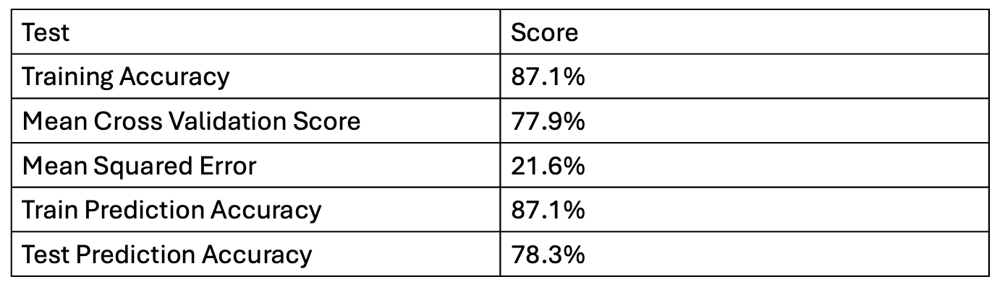
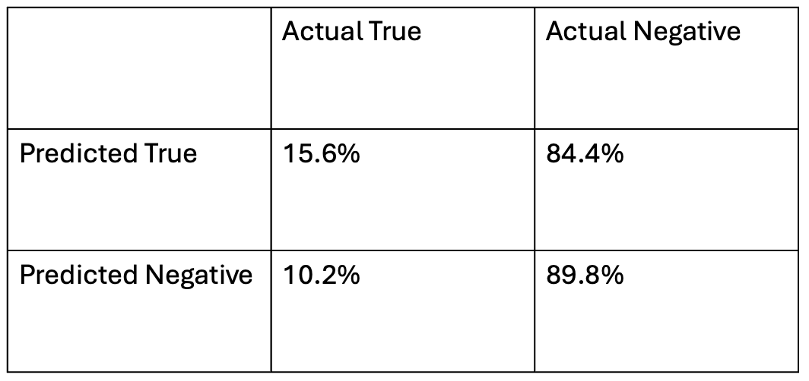

import pandas as pd
labels_url = "https://github.com/MengtingWan/oscar/raw/master/data/df_labels.csv"
features_url = "https://github.com/MengtingWan/oscar/raw/master/data/df_features.csv"
titles_url = "https://github.com/MengtingWan/oscar/raw/master/data/titles.json"
df_labels = pd.read_csv(labels_url)
df_features = pd.read_csv(features_url)
df_titles = pd.read_json(titles_url, lines=True)Abstract
For my final project I decided to focus on a dataset that holds information regarding Oscar winners and nominees from 1990 to 2021. Through an analysis of this dataset I could improve my knowledge of classification machine learning models and attempt to see if there is some connecting characteristic that can be used to predict if a film or actress/actor will be more likely to win an academy award. Many people will watch films because of them winning an Oscar, and if there is a specific aspect of films that makes them be awarded then maybe we can change that to make the awards more equitable to expose consumers to a more diverse set of media. To address this problem I attempted to train a logistic regression model that could predict whether or not a film or actor/actress would win an academy award. While I did sucessfully train a model with 87% training accuracy and a True negative rate of 90%, the model was overfit to the training data and the true positive rate of the model was only 13%. So I don’t believe that I was able to produce an accurate model for predicting if a film is going to win an Oscar or not.
Introduction
The big picture problem that my project aims to tackle is whether or not award winners can be predicted based off of previous years of winners. Connected to that idea is whether or not the features that are most valuable for deciding if someone is a winner are discriminatory or not. For example, if race or gender played a large role in determining if someone was a winner or not which has historically been the case with only 2% of all nominees since the inception of the Oscars to the 2023 awards being women of color (New America).
Many other people before myself have attempted to investigate the discriminatory nature of the Oscars and hollywood in general. One study by Caty Borum Chatoo Borum Chattoo (2018) analyzed Oscar-shortlisted documentary feature films from 2008-2017. In this analysis they note that the films are overwhelmingly created by white male directors, but their work in putting out this flaw is a step in the right direction to breaking that trend and opening the space for people of other identities to participate.
Another instance of change related to the Oscars began in 2015, where the #OscarsSoWhite was created by April Reign on twitter after all 20 acting nominations were given to white actors (this happened a second time in a row immediately following in 2016). The simple hashtag started a national converation around representation in Hollywood and while change has been slow there was a 17% increase in the number of top films with people of color in them from 2015 to 2019. Which given the time frame is still very disappointing.
The USC Annenberg School for Communication and Journalism released a report on the 2024 oscars. They comment about how the 2024 Oscars reached similar high points for representation as with the 2021 Oscars which set records for representation for Women and under-represented groups across the 19 nomination categories (these records are still quite low percentages, 20% of total nominees were from under-represented groups and 32% of nominees were women). While mentioning the representation of groups they also point out an effort by the Annenberg Inclusion Initiative, Stacy L. Smith, and the Adobe Foundation called the Inclusion List. The website is a place to look at the 96 years of history of the Oscars and to see stats about inclusion across the categories as well as to get information about which films are the most inclusive.
While this issue seems quite difficult to tackle it’s cool to see the conversation around it still going and I don’t think that this project will solve the issue, but in pursuing this work I was hoping to maybe add another piece of insight into the discussion.
Values Statement
The potential uses of this project would most likely be analysts or journalists looking into the discriminatory practices of the Oscars or someone who works with the academy awards and wants to analyze if there are specific characteristics of the films that are consciously or subconsciously preferred when choosing winners. General consumers of films might not use this project but they will still be affected by the outcomes of the Oscars and which films become popular or not because of winning an academy award.
Ideally people from under-represented communities would benefit from the technology I’m working with. While lots of data analysis has been done to show how white and male the Oscars have been historically, perhaps if there is even more data or if there is something like a machine learning model that can be used to predict winners, there can be a wake up call that something has to change and we should provide more representation for people of all groups in the academy awards.
I think there are actors/directors out there that have won Oscars very deservedly and while there are problems with the system there are many people that have taken a lot of pride in winning those awards. I think back to Bong Joon Ho’s acceptance speeches for winning Best International film as well as Best Picture for Parasite. If there is a model that can predict winners and reduce Oscar winners down to categories and numbers I think that could possibly open the door to have people say that previous winners weren’t deserving or that they only won because they fit some category, which to be fair is valid argument for many winners (that category being that they were white and male).
My personal reason for working on this project is that I love movies and I thought working with a more entertaining dataset would be both engaging and fun. I also think the Oscars are a bit of a sham and being able to do some more investigation into any trends in their winners sounded like a very interesting topic to me.
In a perfect world yes I think the world could become a better place from the technology I hope to make in this, but speaking more practically I don’t think so. Hollywood already seems so corrupt and hundreds of people have presented real statistical data about how discriminatory the Oscars are so I don’t think that a machine learning model solely to predict Oscar winners would change that course in todays world. I’d like to think that in the age of fanaticism around AI, if a model was to accurately predict all the winners before they happened then people would hopefully start to rethink what was going on, but I don’t think that would actually happen.
The Data
df_labels.head(3)| eventName | eventId | year | awardName | categoryName | newCategoryName | primaryNomineeName | primaryNomineeCode | secondaryNomineeName | secondaryNomineeCode | awardNominationId | isWinner | string | |
|---|---|---|---|---|---|---|---|---|---|---|---|---|---|
| 0 | Academy Awards, USA | ev0000003 | 1990 | Oscar | Best Actor in a Leading Role | Best Performance by an Actor in a Leading Role | ['Daniel Day-Lewis'] | ['nm0000358'] | ['My Left Foot'] | ['tt0097937'] | an0052711 | True | {"primaryNominees": ["nm0000358"], "secondaryN... |
| 1 | Academy Awards, USA | ev0000003 | 1990 | Oscar | Best Actor in a Leading Role | Best Performance by an Actor in a Leading Role | ['Kenneth Branagh'] | ['nm0000110'] | ['Henry V'] | ['tt0097499'] | an0052712 | False | {"primaryNominees": ["nm0000110"], "secondaryN... |
| 2 | Academy Awards, USA | ev0000003 | 1990 | Oscar | Best Actor in a Leading Role | Best Performance by an Actor in a Leading Role | ['Morgan Freeman'] | ['nm0000151'] | ['Driving Miss Daisy'] | ['tt0097239'] | an0052714 | False | {"primaryNominees": ["nm0000151"], "secondaryN... |
df_features.head(3)| BAFTA Awards :: BAFTA Film Award :: Best Actor :: Winner | Golden Globes :: Golden Globe :: Best Performance by an Actor in a Motion Picture - Drama :: Nominated | National Society of Film Critics Awards :: NSFC Award :: Best Actor :: Winner | London Critics Circle Film Awards :: ALFS Award :: Actor of the Year :: Winner | Film Independent Spirit Awards :: Independent Spirit Award :: Best Foreign Film :: Winner | BAFTA Awards :: BAFTA Film Award :: Best Actor in a Supporting Role :: Winner | BAFTA Awards :: BAFTA Film Award :: Best Film :: Nominated | BAFTA Awards :: BAFTA Film Award :: Best Make Up Artist :: Nominated | BAFTA Awards :: BAFTA Film Award :: Best Screenplay (Adapted) :: Nominated | Writers Guild of America :: WGA Award (Screen) :: Best Screenplay Based on Material from Another Medium :: Nominated | ... | Annie Awards :: Annie :: Outstanding Achievement for Voice Acting in an Animated Feature :: Winner | National Board of Review :: NBR Award :: Top Ten Independent Films :: Winner | Gotham Awards :: Gotham Independent Film Award :: Best International Feature :: Nominated | Southeastern Film Critics Association Awards :: SEFCA Award :: Best Animated Film :: Nominated | Palm Springs International Film Festival :: Young Cineastes Award :: Young Cineastes Award :: Winner | rating | numRatings | numUserReviews | numCriticReviews | metacriticScore | |
|---|---|---|---|---|---|---|---|---|---|---|---|---|---|---|---|---|---|---|---|---|---|
| 0 | 1.0 | 1.0 | 1.0 | 1.0 | 1.0 | 1.0 | 1.0 | 1.0 | 1.0 | 1.0 | ... | 0.0 | 0.0 | 0.0 | 0.0 | 0.0 | 1.004454 | -0.745505 | -0.439182 | 0.114921 | 1.121324 |
| 1 | 0.0 | 0.0 | 0.0 | 0.0 | 0.0 | 0.0 | 0.0 | 0.0 | 0.0 | 0.0 | ... | 0.0 | 0.0 | 0.0 | 0.0 | 0.0 | 0.950191 | -1.134039 | -0.368405 | -0.011034 | 0.942712 |
| 2 | 0.0 | 0.0 | 0.0 | 0.0 | 0.0 | 0.0 | 0.0 | 0.0 | 0.0 | 0.0 | ... | 0.0 | 0.0 | 0.0 | 0.0 | 0.0 | 0.923060 | -0.442578 | -0.090014 | 0.335343 | 0.917196 |
3 rows × 2270 columns
df_titles.head(3)| const | keywords | genre | rating_score_critic | rating_score_user | n_rating_user | n_review_critic | n_review_user | award_links | |
|---|---|---|---|---|---|---|---|---|---|
| 0 | tt6023474 | [psychiatrist, doctor patient relationship, re... | [Short, Comedy] | NaN | 7.6 | 798.0 | 4.0 | 10.0 | [/event/ev0000003/2018/1, /event/ev0004554/201... |
| 1 | tt0236447 | [title directed by female, apartheid, south af... | [Documentary] | 85.0 | 7.1 | 226.0 | 7.0 | 17.0 | [/event/ev0000003/2001/1, /event/ev0000837/200... |
| 2 | tt0234288 | [nazi, jewish, czechoslovakia, theresienstadt ... | [Comedy, Drama, War] | 69.0 | 7.7 | 4738.0 | 65.0 | 49.0 | [/event/ev0000003/2001/1, /event/ev0001128/200... |
The bulk of my data is broken up into the following three CSVs taken from MentingWan’s Github repo. The first CSV holds one entry for each oscar nominee, each row includes info about the year the nomination was given, what cateogory the nomination falls under, who was nominated, and whether or not they won. The next CSV holds “pre-oscar information” as described by the repo owner. Each row of this csv correlates to the rows from df_label, but instead of holding oscar information each row holds informatino about festivals and award ceremonies that happen before the Oscars do. In the work done by the repo owner this csv made up the bulk of their features for logistic regression training. The last csv holds information about each movie that was nominated for an Oscar and information about it. The first column is a tag that correlates to either the primaryNomineeCode or secondaryNomineeCode from df_labels. That tag can be used to connect a df_titles entry to one from df_features/df_labels. In addition to the tag there is also a list of keywords associated with the movie as well as genres associated with the movie and user/critic reviews.
Potential limitations of this dataset that would have been very useful to my research question is demographic data about the winners. I was able to infer some of that information during my data analysis which I will explain later, but for much of my training data I was missing interesting demographic data that could have composed interesting features for model training. Also the composition of this data, made it so it relied quiet heavily on the pre-oscar data for model training in the case of the repo owner and later in my own model training. Also separating the data like was done leaves room for error when trying to attach the df_titles information onto df_labels/df_features.
My Approach
To begin my work I started by cleaning up the data and combing the dataframes to have movie information connected to oscar/pre-oscar information. Starting this process, I actually wanted to incorporate some of my own demographic data that wasn’t included in the initial dataset. I found .txt files online that held a list of generic male/female names and I used those to parse through the Oscar nomination data and (where applicable) attached a male/female boolean value to the df_labels dataframe. This method was not perfect, but it allowed me to do some preliminary data analysis to achieve some of my goal of analyzing the discriminatory nature of Oscar nominations. After attaching male/female tags I did some basic string splicing to cleanup the primaryNomineeCode and secondaryNomineeCode those were then paired with the tags seen in the df_titles dataframe to attach the movie information to the df_labels dataframe. I then took the following information from the df_labels dataframe and attached it to the df_features dataframe: genre, category, user_rating, critic_rating, male, female, isWinner/label, year. That all combined into my main feature dataframe df_data. This dataframe was later split into a dataframe genre_df which held the same information there was just one unique row for each genre attached to a movie, so there were rows with the same information just different genres.
After producing genre_df, I did some initial data visualization and tried using features like, genre, male, female, user/critic rating, and category to train a logistic regression model, but that did not prove fruitful and after repeated models of only ~60% training accuracy I decided to include the pre-oscar information about the previous awards nominees had won and that increased training accuracy quite a bit. So the main features being used were roughly 2000 columns about previous award winners, genre, male, female, user/critic rating, category, and year. The target used was isWinner/label, i.e. whether or not a nominee won an Oscar.
Before model training I subset my data into two randomly chosen sets of ~1800 winners and 1800 losers, as when first conducting training, my dataset was made up of 80% losers and the model could just predict loser every time and get an 80% training accuracy. To avoid that I wanted to set up the training data with about a 50/50 split of winners and losers.
I decided to work with a Logistic Regression model as it was quite simple to set up and would help me achieve my goal of classification between two distinct sets, either 1 an Oscar winner or 0 an Oscar loser. I attempted to set up a neural network with an embedding layer to tokenize and vectorize the genre and keyword information of the movies, but I felt it over complicated the data I was working with and didn’t improve training accuracy.
To train my model I used scikit’s Pipeline class and was able to just run everything on my laptop. In the pipeline I would send my categorical data, genre and category into a One Hot Encoder to turn those features into quantitative data and then I would run everything through the Logistic Regression model.
To evaluate my model, I compute a cross validation score, checked prediction accuracies on my training set as well as my testing set and then ran the train predictions through a confusion matrix to see rate of TP, FP, TN, and FN. My test and traing set were split in an 80/20 ratio and my training set was ~3000 entries long (2968 to be exact).
Results


The results were really promising at first. Given the data that I was trying to predict, getting an 87% training accuracy was super impressive. There was evidence of overfitting with the cross validation score being around 78%, but I was still very pleased with the numbers I was seeing through the training accuracy and cross-val score. This kept going into testing the prediction accuracy on the training and testing data. Seeing 87% accuracy on the training data and 78% on the test data I thought that I had successfully trained a model that would be able to predict whether or not someone won an Oscar. Then I looked at the confusion matrix for my results and the rates of False Positives changed my opinions of my model quite dramatically. While the model is really accurate at predicting negative cases with a 90% True Negative accuracy, the model over predicts winners at an impressively bad rate. With an 84% False Positive rate I would not trust this model to accurately predict the next Oscar winner. Inversely I would actually feel quite confident to say who the next Oscar loser was based off my models results, but obviously that was not the goal of this project.
These results are disappointing as I ran into struggles at the beginning of this work as well. When trying to train a logistic regression model on genres, critic/user ratings, categories, and years I had a consist training accuracy around 60% and was beginning to be convinced that it would be impossible to get an accurate model using the data that I had cleaned. So getting a training accuracy as high as I did was an encouraging break, but with the results of the confusion matrix, the technique that I approached this work with ended up failing. I looked into the work that the github repo owner did to get their prediction accuracies so high, and they just used the pre-oscar data to predict Oscar winners for individual years. Which makes sense, (if someone wins a bunch of awards in a year it seems likely they would be more likely to win an Oscar that year) but that isn’t the approach that I wanted to take in this work and I didn’t want to just mimic their work and reproduce their data. I will discuss more in my conclusion, but I think the approach I took for this project made sense to me and while it didn’t work out getting the results I wanted it was a good learning experience.
Concluding Discussion
I think the initial data analysis of my project worked, even though the dataset I was working with didn’t contain demographic data, the fact that I was able to (although quite arcanely) attach gender tags to the data and compare the rates men and women were nominated for awards felt like a slight win towards my larger goal of contributing to the conversation around discrimination in the Oscars. Additionally, while the confusion matrix I produced for my model wasn’t great it is encouraging how high of prediction accuracy we were able to reach and that with some fine-tuning a model that predicts Oscar winners is achievable. I’m also proud of myself that I was able to improve from the initial stages of my model development and to become more creative in how I was approaching this prediction problem to give myself the best chances of success.
Unfortunately I don’t think I met the goals that I set forth before starting this project. While I was able to set up a data processing pipeline as well as a model training pipeline, I don’t think the models I was able to produce through this work really answer the question that I set out to tackle at the beginning of this work. Through my model I was not able to discern bias in how Oscar winners were selected and as the prediction capabilities of my model were not precise I wasn’t able to try and manipulate predictions in a way that might boost the prevalence of under-represented groups in the award ceremony winners.
Looking just at the model training accuracy my results fair somewhat comparably to people that have done similar work to mine, however, the results that other people were able to achieve were much more impressive than mine. The repo owner was able to get upwards of 95% prediction accuracy when predicting Oscar winners in some categories which is something my model is nowhere close to reaching unfortunately.
If I had more time and computational resources I would like to either find or develop a better dataset that holds more demographic data about Oscar winners and losers and then use that model to predict future winners off of that to detect bias in the dataset. Additionally on the model side of things attempting to develop a neural net with embeddings that could make more use of the keywords supplied in the dataset I worked with would be really interest as I think that is an area when compared with genre or user/critic score that I could actually see some interesting results.
Group Contributions
I completed this project alone, so all of the coding, figure design, and writing was done by me with help from Professor Phil here and there.
Personal Reflection
One of the biggest things that I learned from this project is that an undertaking of this size (although quite small for us) is a very big task. In retrospect I think I would push myself to approach this project with a partner to divide the work more efficiently. While I can struggle sometimes with conflicting ideas and wanting to do things my way I think it would be good for me to work on that and also produce a better end product by having more hands to better manage the project. I was also re-reminded that having weekly check in meetings is super helpful to keeping myself on track both with the actual work I’m doing and being able to communicate my work to others. One of the most difficult tasks in science is to communicate the work you’re doing to people that don’t know about it. So having a group of CS majors who don’t know about my project felt like a good medium to practice that.
I’m a bit disappointed with what I achieved in this work. While I felt that I put in a good deal of time and effort into this project I ran into many road blocks and struggled to move past a lot of them, especially towards the end of my project where I had felt like I had put together an accurate model only to do more digging and realize it was not as accurate as I had believed. I also wish that I had been more streamlined in my initial goal of this project. I think over the course of my data analysis I became fixated on getting an accurate model and so I lost sight of my initial data analysis and started to just grab things from my data I thought might contribute to a more accurate model. Circling back to what I said in my first point I think had I been working with someone else that pitfall could have been avoided by having another voice keeping me on track.
I think I will take a lot out of this project in both gaining some confidence in my ability to work through frustrating coding challenges as well as recognizing when it is okay to ask for help and to work with someone else. I can be quite stubborn and from this project I can take forward that I can be more open to other people’s ideas and their approaches to work that could benefit me a lot.
References
Borum Chattoo, Caty. 2018. “Oscars so White: Gender, Racial, and Ethnic Diversity and Social Issues in US Documentary Films (2008–2017).” Mass Communication and Society 21 (3): 368–94.